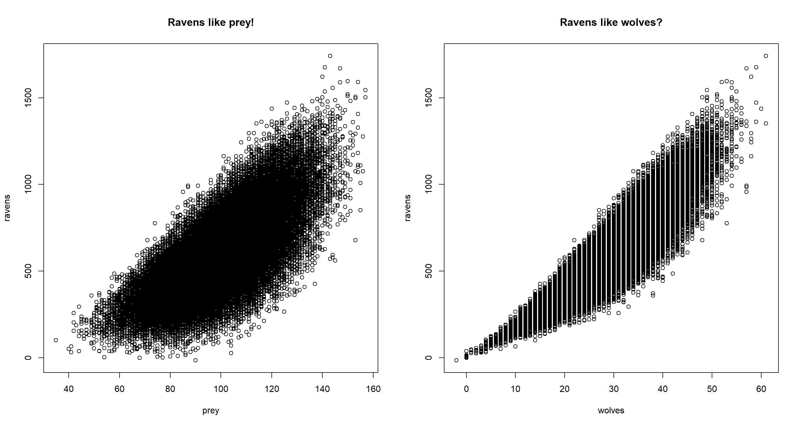
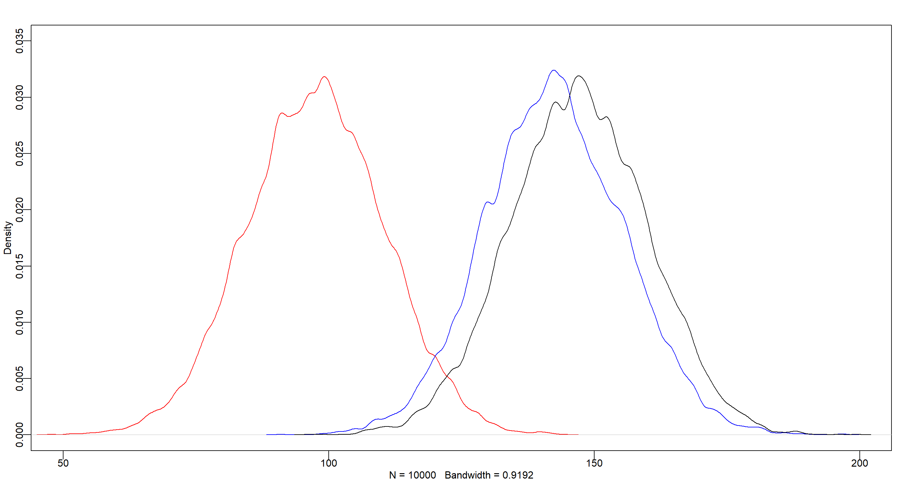
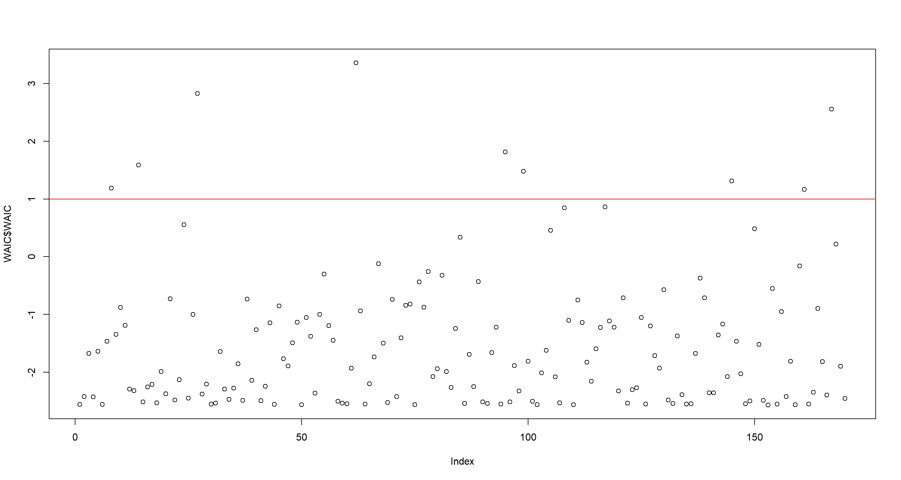
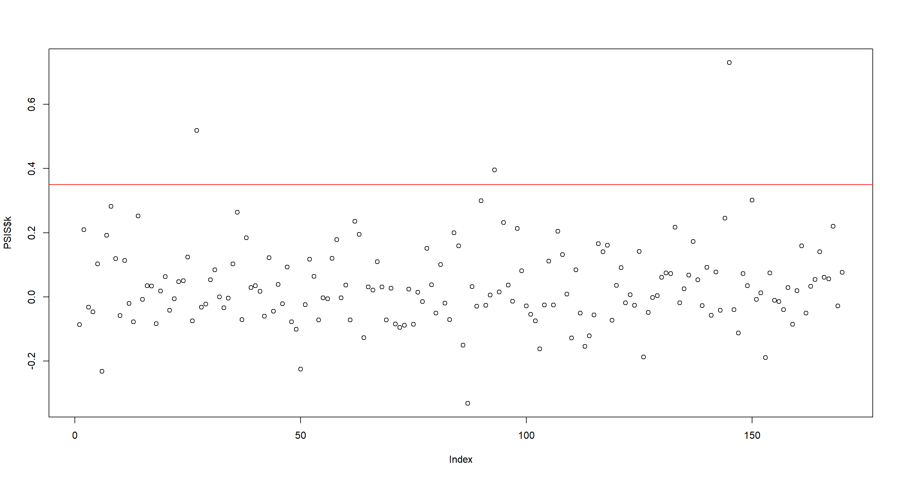
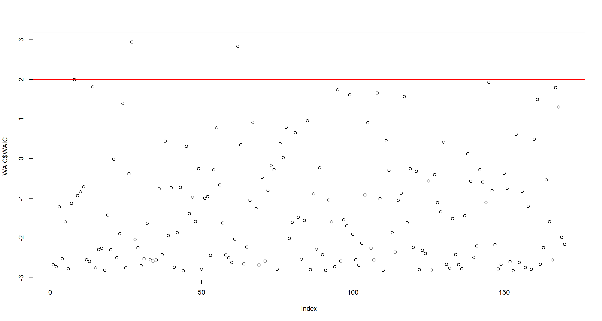
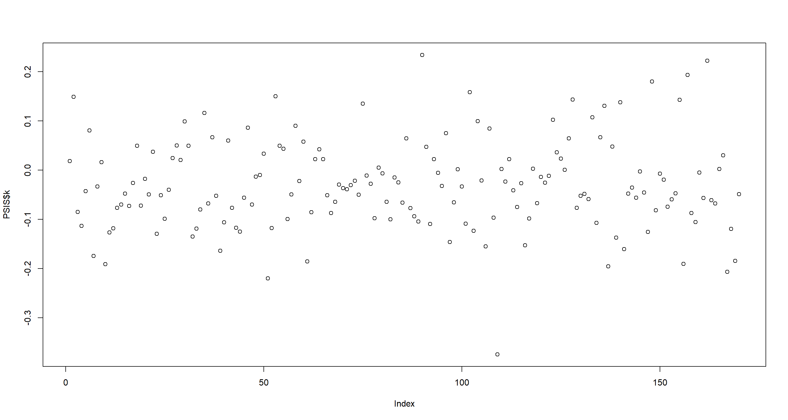
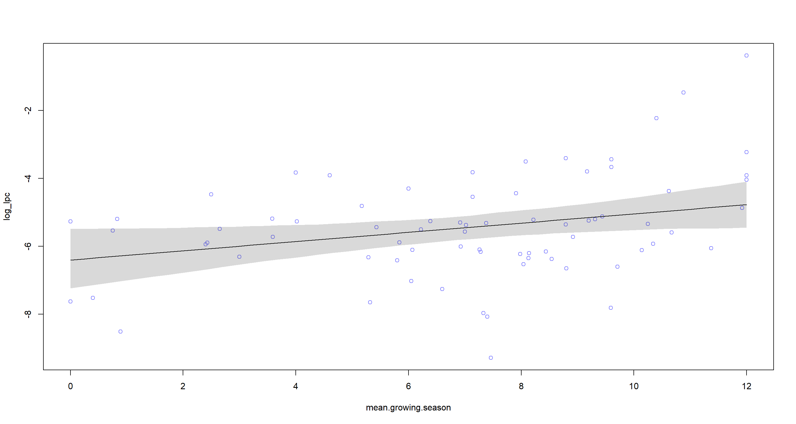
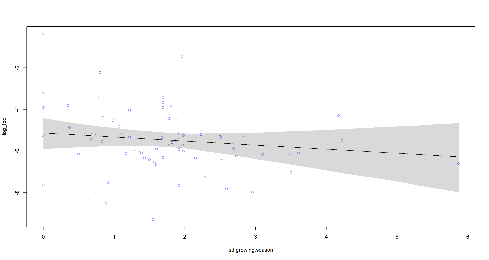
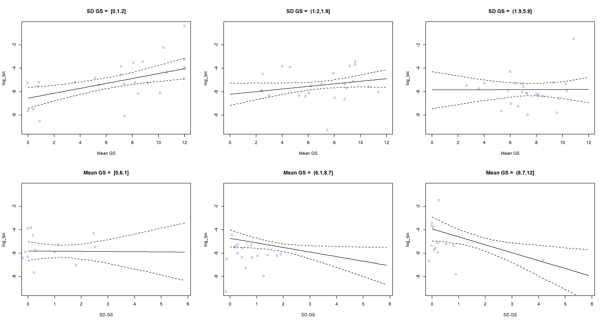

Chapter 08
Conditional Manatees
Material
Introduction
These are answers and solutions to the exercises at the end of chapter 8 in Satistical Rethinking 2 by Richard McElreath. I have created these notes as a part of my ongoing involvement in the AU Bayes Study Group. Much of my inspiration for these solutions, where necessary, has been obtained from Jeffrey Girard.
R Environment
For today’s exercise, I load the following packages:
library(rethinking)
library(ggplot2)
library(viridis)
Easy Exercises
Practice E1
Question: For each of the causal relationships below, name a hypothetical third variable that would lead to an interaction effect.
- Bread dough rises because of yeast.
- Education leads to higher income.
- Gasoline makes a car go.
Answer:
- Temperature. Yeast is active only in a certain range of temperatures and varyingly so.
- Age. Time spent in a profession usually comes with raises and thus higher pay as one gets older. This is not the case in all jobs, of course.
- Engine efficiency will interact with the presence of gasoline to determine how much the car will go.
Practice E2
Question: Which of the following explanations invokes an interaction?
- Caramelizing onions requires cooking over low heat and making sure the onions do not dry out.
- A car will go faster when it has more cylinders or when it has a better fuel injector.
- Most people acquire their political beliefs from their parents, unless they get them instead from their friends.
- Intelligent animal species tend to be either highly social or have manipulative appendages (hands, tentacles, etc.).
Answer:
- Yes, there is an interaction here. Water and low heat interact to caramelize onions.
- Yes, there is an interaction here. Number of cylinders and quality of fuel injector interact to determine the speed of the car.
- No, there is no interaction here. You either get your political belief from your parents or your friends. The two do not interact.
- Yes, there is an interaction here. Degree of sociality and possession of manipulative appendages combine to determine intelligence level.
Practice E3
Question: For each of the explanations in E2, write a linear model that expresses the stated relationship.
Answer:
- $\mu_i = \beta_T * T_i + \beta_W*W_i + \beta_{TW} * T_i W_i$
- $\mu_i = \beta_C * C_i + \beta_F * F_i + \beta_{CF} * C_i F_i$
- $\mu_i = \beta_P * P_i + \beta_F * F_i$
- $\mu_i = \beta_S * S_i + \beta_A * A_i + \beta_{SA} S_iA_i$
Medium Exercises
Practice M1
Question: Recall the tulips example from the chapter. Suppose another set of treatments adjusted the temperature in the greenhouse over two levels: cold and hot. The data in the chapter were collected at the cold temperature. You find none of the plants grown under the hot temperature developed any blooms at all, regardless of the water and shade levels. Can you explain this result in terms of interactions between water, shade, and temperature?
Answer: We now have a model with a three-way interaction which comes with three two-way interactions:
$$ \begin{aligned} \mu_i = & \alpha + \beta_T * T_i + \beta_W * W_i + \beta_S * S_i + \newline & \beta_{TW} * T_iW_i + \beta_{TS} * T_iS_i + \beta_{WS} * W_iS_i + \newline & \beta_{TWS} * T_iW_iS_i \end{aligned} $$
Within this model all parameters work out such that when $T_i = 2$ (hot condition) we obtain $\mu_i = 0$ (no blooms).
Practice M2
Question: Can you invent a regression equation that would make the bloom size zero, whenever the temperature is hot?
Answer: Oops. I partially answered that in my previous exercise, but let’s go more in detail. Let’s first remember some values from the chapter: (1) water is recorded as 1-3 (dry to wet), (2) shade is coded as 1-3 (high to low), and (3) temperature is coded as 0/1 (cold/hot). So now we know that, irrespective of the values of water or shade, as long as $T = 1$, $mu_i$ has to be $0$ in this forumla:
$$ \begin{split} \mu_i = &\alpha + \beta_T * T_i + \beta_W * W_i + \beta_S * S_i + \newline &\beta_{TW} * T_iW_i + \beta_{TS} * T_iS_i + \beta_{WS} * W_iS_i + \newline &\beta_{TWS} * T_iW_iS_i \end{split} $$
How do we get there? For now, let’s set water and shade to 1 and temperature to 1. Doing so will result in a rewriting of the formula above to:
\begin{equation} \begin{split} \mu_{i|T=1,W=1,S=1} = \alpha + \beta_T + \beta_W + \beta_S + \beta_{TW} + \beta_{TS} + \beta_{WS} + \beta_{TWS} \end{split} \end{equation}
So now we need to get this formula to always work out to 0, irrespective of values of $\alpha$, $\beta_s$, $\beta_W$, and $\beta_{WS}$. We can do so by having parameters which include the effect of temperature ($\beta_T$, $\beta_{TW}$, $\beta_{TS}$, and $\beta_{TWS}$) counteract the $\alpha$, $\beta_s$, $\beta_W$, and $\beta_{WS}$. This has us rewrite the above formula as:
\begin{equation} \begin{split} \mu_{i|T=1,W=1,S=1} = (\alpha + \beta_T) + (\beta_W + \beta_{TW}) + (\beta_S + \beta_{TS}) + (\beta_{WS} + \beta_{TWS}) \end{split} \end{equation}
Now for the outcome to be $0$, the contents of the brackets need to be 0, so $\beta_T = -\alpha$, $\beta_{TW} = -\beta_W$, and so on. This morphs our equation into:
\begin{equation} \begin{split} \mu_{i|T=1,W=1,S=1} = (\alpha - \alpha) + (\beta_W - \beta_W) + (\beta_S - \beta_S) + (\beta_{WS} - \beta_{WS}) \end{split} \end{equation}
So now, irrespective of $W$ or $S$, we will always obtain $\mu_i = 0$ when $T=1$. When $T=0$, all temperature effects drop out and we obtain the same formula as in the book chapter.
Practice M3
Question: In parts of North America, ravens depend upon wolves for their food. This is because ravens are carnivorous but cannot usually kill or open carcasses of prey. Wolves however can and do kill and tear open animals, and they tolerate ravens co-feeding at their kills. This species relationship is generally described as a “species interaction.” Can you invent a hypothetical set of data on raven population size in which this relationship would manifest as a statistical interaction? Do you think the biological interaction could be linear? Why or why not?
Answer: Here’s our regression:
$Ravens∼Normal(μ,σ)$
$μ=α+β_pPrey+β_wWolves+β_{pw}Prey*Wolves$
with $Ravens$, $Wolves$, and $Prey$ being the number of ravens, wolves, and prey animals respectively, in a given habitat.
Now let’s make up some data with an in-built interaction effect:
N <- 1e5 # simulation size
rPW <- 0.2 # correlation between prey and wolf
bP <- 0.05 # regression coefficient for prey
bW <- -0.3 # regression coefficient for wolf
bPW <- 0.2 # regression coefficient for prey-by-wolf interaction
# Simulate data
prey <- as.integer(rnorm(N, mean = 100, sd = 15)) # as.integer, so we have "whole" animals
wolves <- as.integer(rnorm(N, mean = 10 + rPW * prey, sd = 7))
ravens <- as.integer(rnorm(N, mean = 5 + bP * prey + bW * wolves + bPW * wolves * prey, sd = 9))
d <- data.frame(prey = prey, wolves = wolves, ravens = ravens)
# plot the data
par(mfrow = c(1, 2))
plot(ravens ~ prey, data = d, main = "Ravens like prey!")
plot(ravens ~ wolves, data = d, main = "Ravens like wolves?")

Immediately, we see in our data that, despite us having simulated the data in such a way that ravens do not flock around wolves, when not conditioning on prey, we would think that ravens do flock around wolves.
Time for a model run:
m <- quap(
alist(
ravens ~ dnorm(mu, sigma),
mu <- a + bP * prey + bW * wolves + bPW * prey * wolves,
a ~ dnorm(min(d$ravens), 10), # minimum of ravens for intercept prior
bW ~ dnorm(0, 1),
bP ~ dnorm(0, 1),
bPW ~ dnorm(0, 1),
sigma ~ dnorm(sd(d$ravens), 10) # sd of raven as an initial guess
),
data = d
)
precis(m)
## mean sd 5.5% 94.5%
## a 5.41309759 0.6926177989 4.3061606 6.52003460
## bW -0.32805262 0.0233269747 -0.3653336 -0.29077161
## bP 0.04084714 0.0070894052 0.0295169 0.05217738
## bPW 0.20027501 0.0002308127 0.1999061 0.20064390
## sigma 8.97789166 0.0200777428 8.9458035 9.00997977
And we successfully reconstructed our input interactions.
Hard Exercises
Practice H1
Question: Return to the data(tulips) example in the chapter. Now include the bed variable as a predictor in the interaction model. Don’t interact bed with the other predictors; just include it as a main effect. Note that bed is categorical. So to use it properly, you will need to either construct dummy variables or rather an index variable, as explained in Chapter 6.
Answer:
## Data
data(tulips)
d <- tulips
d$bed_id <- coerce_index(d$bed)
d$blooms_std <- d$blooms / max(d$blooms) # now on a scale from 0 to 1
d$shade_cent <- d$shade - mean(d$shade) # now on a scale from -1 to 1
d$water_cent <- d$water - mean(d$water) # now on a scale from -1 to 1
## Model
set.seed(20) # setting a seed because I sometimes run out of model iterations here
m.H1 <- quap(alist(
blooms ~ dnorm(mu, sigma),
mu <- a[bed_id] + bW * water_cent + bS * shade_cent + bWS * water_cent * shade_cent,
a[bed_id] ~ dnorm(130, 100),
bW ~ dnorm(0, 100),
bS ~ dnorm(0, 100),
bWS ~ dnorm(0, 100),
sigma ~ dunif(0, 100)
),
data = d
)
precis(m.H1, depth = 2)
## mean sd 5.5% 94.5%
## a[1] 97.54986 12.951192 76.85135 118.24837
## a[2] 142.41547 12.950773 121.71763 163.11330
## a[3] 147.11128 12.950771 126.41344 167.80911
## bW 75.12289 9.197989 60.42272 89.82305
## bS -41.23747 9.196690 -55.93555 -26.53938
## bWS -52.23345 11.240444 -70.19785 -34.26905
## sigma 39.18206 5.333939 30.65740 47.70673
Practice H2
Question: Use WAIC to compare the model from H1 to a model that omits bed. What do you infer from this comparison? Can you reconcile the WAIC results with the posterior distribution of the bed coefficients?
Answer:
m.H2 <- quap(
alist(
blooms ~ dnorm(mu, sigma),
mu <- a + bW * water_cent + bS * shade_cent + bWS * water_cent * shade_cent,
a ~ dnorm(130, 100),
bW ~ dnorm(0, 100),
bS ~ dnorm(0, 100),
bWS ~ dnorm(0, 100),
sigma ~ dunif(0, 100)
),
data = d,
start = list(a = mean(d$blooms), bW = 0, bS = 0, bWS = 0, sigma = sd(d$blooms))
)
precis(m.H2)
## mean sd 5.5% 94.5%
## a 129.00797 8.670771 115.15041 142.86554
## bW 74.95946 10.601997 58.01542 91.90350
## bS -41.14054 10.600309 -58.08188 -24.19920
## bWS -51.87265 12.948117 -72.56625 -31.17906
## sigma 45.22497 6.152982 35.39132 55.05863
compare(m.H1, m.H2)
## WAIC SE dWAIC dSE pWAIC weight
## m.H2 295.0441 9.873189 0.000000 NA 6.062662 0.6776652
## m.H1 296.5302 10.544146 1.486126 8.181914 10.771689 0.3223348
The model including the bed index variables (m.H2) shows a slightly better WAIC than the model that contains the bed variable (m.H1), and most of the Akaike weight. Judging from this (and the variation in the bed intercepts of model m.H1), we can infer that there’s a lot of variability between the flower beds which model m.H1 addresses, but might overfit in doing so. Let me visualise this in a plot:
post <- extract.samples(m.H1)
post.a <- post$a[, 1]
post.b <- post$a[, 2]
post.c <- post$a[, 3]
dens(post.a, col = "red", xlim = c(50, 200), ylim = c(0, 0.035))
dens(post.b, col = "blue", add = TRUE)
dens(post.c, col = "black", add = TRUE)

Practice H3
Question: Consider again the data(rugged) data on economic development and terrain ruggedness, examined in this chapter. One of the African countries in that example, Seychelles, is far outside the cloud of other nations, being a rare country with both relatively high GDP and high ruggedness. Seychelles is also unusual, in that it is a group of islands far from the coast of mainland Africa, and its main economic activity is tourism.
Answer:
data(rugged)
d <- rugged
d <- rugged[complete.cases(rugged$rgdppc_2000), ]
d$log_gdp <- log(d$rgdppc_2000)
d$log_gdp_std <- d$log_gdp / mean(d$log_gdp)
d$rugged_std <- d$rugged / max(d$rugged)
d$cid <- ifelse(d$cont_africa == 1, 1, 2)
Part A
Question: Focus on model m8.5 from the chapter. Use WAIC point-wise penalties and PSIS Pareto k values to measure relative influence of each country. By these criteria, is Seychelles influencing the results? Are there other nations that are relatively influential? If so, can you explain why?
Answer:
Firstly, the model that the exercise is after is not model m8.5, but model m8.3. Let’s run that and look at the PSIS point-wise values:
m.H3a <- quap(alist(
log_gdp_std ~ dnorm(mu, sigma),
mu <- a[cid] + b[cid] * (rugged_std - 0.215),
a[cid] ~ dnorm(1, 0.1),
b[cid] ~ dnorm(0, 0.3),
sigma ~ dexp(1)
),
data = d
)
precis(m.H3a, depth = 2)
## mean sd 5.5% 94.5%
## a[1] 0.8865690 0.015675759 0.86151610 0.91162189
## a[2] 1.0505745 0.009936639 1.03469382 1.06645515
## b[1] 0.1325281 0.074204674 0.01393472 0.25112152
## b[2] -0.1425744 0.054749596 -0.23007484 -0.05507398
## sigma 0.1094945 0.005935353 0.10000867 0.11898035
Next, we look at point-wise WAIC values. I think there’s a pretty clear separation of high point-wise WAIC-values in the plot at around 1 so I draw that in and obtain the country names for these:
WAIC <- WAIC(m.H3a, pointwise = TRUE)
plot(WAIC$WAIC)
abline(h = 1, col = "red")

as.character(d[WAIC$WAIC > 1, ]$country)
## [1] "Austria" "Bangladesh" "Switzerland" "Equatorial Guinea" "Luxembourg" "Republic of Moldova" "Seychelles" "Uzbekistan"
## [9] "Yemen"
Now, we do the same with point-wise PSIS Pareto k values. Again, I believe there is a separation. This time at 0.35:
PSIS <- PSIS(m.H3a, pointwise = TRUE)
plot(PSIS$k)
abline(h = .35, col = "red")

as.character(d[PSIS$k > .35, ]$country)
## [1] "Switzerland" "Lesotho" "Seychelles"
Honestly, I cannot make too much sense of the countries I obtained via the point-wise WAIC-values, but the point-wise PSIS Pareto k values make obvious sense here. All of these are extremely rugged and much richer than even their surrounding flat countries.
Part B
Question: Now use robust regression, as described in the previous chapter. Modify m8.5 to use a Student-t distribution with $ν = 2$. Does this change the results in a substantial way?
Answer:
m.H3b <- quap(alist(
log_gdp_std ~ dstudent(2, mu, sigma),
mu <- a[cid] + b[cid] * (rugged_std - 0.215),
a[cid] ~ dnorm(1, 0.1),
b[cid] ~ dnorm(0, 0.3),
sigma ~ dexp(1)
),
data = d
)
precis(m.H3b, depth = 2)
## mean sd 5.5% 94.5%
## a[1] 0.86265354 0.016153871 0.836836529 0.88847054
## a[2] 1.04573322 0.010971670 1.028198374 1.06326807
## b[1] 0.11279640 0.075195199 -0.007380055 0.23297285
## b[2] -0.21362933 0.063538165 -0.315175587 -0.11208307
## sigma 0.08452953 0.006732778 0.073769255 0.09528981
The parameter estimates changed slightly, but not crazily so. Let’s look at the point-wise importance again. This time, I see a split in WAIC values around 2:
WAIC <- WAIC(m.H3b, pointwise = TRUE)
plot(WAIC$WAIC)
abline(h = 2, col = "red")

as.character(d[WAIC$WAIC > 2, ]$country)
## [1] "Switzerland" "Equatorial Guinea"
Now for point-wise PSIS-values. This time, I see don’t really a separation so I’ll just pull out the highest ranking nations:
PSIS <- PSIS(m.H3b, pointwise = TRUE)
plot(PSIS$k)

as.character(d$country[as.numeric(rownames(PSIS[order(PSIS$k), ])[1:5])])
## [1] "Malawi" "Ethiopia" "Yemen" "Singapore" "Burundi"
Interestingly, only Switzerland shows up in our subset of potentially highly influential nations. That being said, the outliers in the WAIC and point-wise PSIS values are much closer to the main cloud of data points than they were previously. I expect this to be the effect of the ropbust regression.
Practice H4
Question: The values in data(nettle) are data on language diversity in 74 nations. The meaning of each column is given below:
country: Name of the countrynum.lang: Number of recognized languages spokenarea: Area in square kilometresk.pop: Population, in thousandsnum.stations: Number of weather stations that provided data for the next two columnsmean.growing.season: Average length of growing season, in monthssd.growing.season: Standard deviation of length of growing season, in months
Use these data to evaluate the hypothesis that language diversity is partly a product of food security. The notion is that, in productive ecologies, people don’t need large social networks to buffer them against risk of food shortfalls. This means ethnic groups can be smaller and more self-sufficient, leading to more languages per capita. In contrast, in a poor ecology, there is more subsistence risk, and so human societies have adapted by building larger networks of mutual obligation to provide food insurance. This in turn creates social forces that help prevent languages from diversifying. Specifically, you will try to model the number of languages per capita as the outcome variable:
d$lang.per.cap <- d$num.lang / d$k.pop
Use the logarithm of this new variable as your regression outcome. (A count model would be better here, but you’ll learn those later, in Chapter 11.) This problem is open ended, allowing you to decide how you address the hypotheses and the uncertain advice the modelling provides. If you think you need to use WAIC any place, please do. If you think you need certain priors, argue for them. If you think you need to plot predictions in a certain way, please do. Just try to honestly evaluate the main effects of both mean.growing.season and sd.growing.season, as well as their two-way interaction, as outlined in parts (a), (b), and (c) below. If you are not sure which approach to use, try several.
Answer:
data(nettle)
d <- nettle
d$lang.per.cap <- d$num.lang / d$k.pop
d$log_lpc <- log(d$lang.per.cap)
d$log_area <- log(d$area)
d$log_area.c <- d$log_area - mean(d$log_area)
d$mgs.c <- d$mean.growing.season - mean(d$mean.growing.season)
d$sgs.c <- d$sd.growing.season - mean(d$sd.growing.season)
Part A
Question: Evaluate the hypothesis that language diversity, as measured by log(lang.per.cap), is positively associated with the average length of the growing season, mean.growing.season. Consider log(area) in your regression(s) as a covariate (not an interaction). Interpret your results.
Answer: Let’s start this off by building a model that attempts to identify the logarithmic language per capita as defined above (log_lpc). I use this as my response variable to smooth out the effects of highly multilingual communities which would otherwise look like freakish outliers:
### Model
m.H4a <- quap(
alist(
log_lpc ~ dnorm(mu, sigma),
mu <- a + bM * mean.growing.season + bA * log_area.c,
a ~ dnorm(mean(d$log_lpc), sd(d$log_lpc)),
bM ~ dnorm(0, 2),
bA ~ dnorm(0, 2),
sigma ~ dunif(0, 10)
),
data = d
)
precis(m.H4a)
## mean sd 5.5% 94.5%
## a -6.3965435 0.40827385 -7.0490440 -5.744043063
## bM 0.1349813 0.05390024 0.0488383 0.221124289
## bA -0.2091213 0.13661084 -0.4274518 0.009209185
## sigma 1.3894990 0.11424753 1.2069094 1.572088628
### Prediction plot
mean.growing.season.seq <- seq(from = min(d$mean.growing.season), to = max(d$mean.growing.season), length.out = 50)
mu <- link(m.H4a, data = data.frame(mean.growing.season = mean.growing.season.seq, log_area.c = 0), refresh = 0)
mu.mean <- apply(mu, 2, mean)
mu.PI <- apply(mu, 2, PI, prob = 0.97)
plot(log_lpc ~ mean.growing.season, data = d, col = rangi2)
lines(mean.growing.season.seq, mu.mean)
shade(mu.PI, mean.growing.season.seq)

As we can see, there’s a positive linear relationship between mean.growing.season and number of languages spoken by a population while also conditioning on area of the nations in question. I highly doubt that there is any causality here, however and instead hypothesise that mean.growing.season can be used as a proxy for “sunniness” of a nation which, from anecdotal evidence, is much more appealing to immigration from all over the world than freezing countries with short growing seasons. To follow the rationale of the task however, this is evidence of ample food supply allowing for cultural diversity and thus higher language count.
Part B
Question: Now evaluate the hypothesis that language diversity is negatively associated with the standard deviation of length of growing season, sd.growing.season. This hypothesis follows from uncertainty in harvest favouring social insurance through larger social networks and therefore fewer languages. Again, consider log(area) as a covariate (not an interaction). Interpret your results.
Answer:
### Model
m.H4b <- quap(
alist(
log_lpc ~ dnorm(mu, sigma),
mu <- a + bS * sd.growing.season + bA * log_area.c,
a ~ dnorm(mean(d$log_lpc), sd(d$log_lpc)),
bS ~ dnorm(0, 5),
bA ~ dnorm(0, 5),
sigma ~ dunif(0, 10)
),
data = d
)
precis(m.H4b)
## mean sd 5.5% 94.5%
## a -5.1199557 0.3485729 -5.6770426 -4.562868804
## bS -0.2005191 0.1824921 -0.4921768 0.091138529
## bA -0.2433936 0.1552325 -0.4914852 0.004697949
## sigma 1.4384790 0.1182463 1.2494986 1.627459505
### Prediction plot
sd.growing.season.seq <- seq(from = min(d$sd.growing.season), to = max(d$sd.growing.season), length.out = 50)
mu <- link(m.H4b, data = data.frame(sd.growing.season = sd.growing.season.seq, log_area.c = 0), refresh = 0)
mu.mean <- apply(mu, 2, mean)
mu.PI <- apply(mu, 2, PI, prob = 0.97)
plot(log_lpc ~ sd.growing.season, data = d, col = rangi2)
lines(sd.growing.season.seq, mu.mean)
shade(mu.PI, sd.growing.season.seq)

Again, I find myself agreeing with the hypothesis seeing how I have identified a negative relationship between sd.growing.season and language count.
Part C
Question: Finally, evaluate the hypothesis that mean.growing.season and sd.growing.season interact to synergistically reduce language diversity. The idea is that, in nations with longer average growing seasons, high variance makes storage and redistribution even more important than it would be otherwise. That way, people can cooperate to preserve and protect windfalls to be used during the droughts. These forces in turn may lead to greater social integration and fewer languages.
Answer: Again, I build a model which conditions on centred logarithmic area of nations, while building an interaction between mean.growing.season and sd.growing.season:
m.H4c <- quap(
alist(
log_lpc ~ dnorm(mu, sigma),
mu <- a +
bM * mean.growing.season +
bS * sd.growing.season +
bMS * mean.growing.season * sd.growing.season +
bA * log_area.c,
a ~ dnorm(mean(d$log_lpc), sd(d$log_lpc)),
bM ~ dnorm(0, 5),
bS ~ dnorm(0, 5),
bA ~ dnorm(0, 5),
bMS ~ dnorm(0, 5),
sigma ~ dunif(0, 10)
),
data = d
)
precis(m.H4c)
## mean sd 5.5% 94.5%
## a -6.771794698 0.55161186 -7.6533770 -5.89021241
## bM 0.277261541 0.07288992 0.1607694 0.39375371
## bS 0.327529661 0.37052336 -0.2646382 0.91969756
## bA -0.005517158 0.15891352 -0.2594917 0.24845734
## bMS -0.098088334 0.04565210 -0.1710492 -0.02512746
## sigma 1.307674873 0.10763683 1.1356504 1.47969932
We seem to be quite sure of the interaction effect bMS.
To investiagte the interaction of the two predictors we are interested in, let’s produce a Tryptich each:
par(mfrow = c(2, 3))
# Discretize variables into groups
d$mean.growing.season.group <- cut(
d$mean.growing.season,
breaks = quantile(d$mean.growing.season, probs = c(0, 1 / 3, 2 / 3, 1)),
include.lowest = TRUE,
dig.lab = 2
)
d$sd.growing.season.group <- cut(
d$sd.growing.season,
breaks = quantile(d$sd.growing.season, probs = c(0, 1 / 3, 2 / 3, 1)),
include.lowest = TRUE,
dig.lab = 2
)
# Plot first row as mean against SD
mean.growing.season.seq <- seq(from = min(d$mean.growing.season), to = max(d$mean.growing.season), length.out = 50)
for (group in levels(d$sd.growing.season.group)) {
dt <- d[d$sd.growing.season.group == group, ]
plot(log_lpc ~ mean.growing.season,
data = dt, col = rangi2, xlim = c(min(d$mean.growing.season), max(d$mean.growing.season)), ylim = c(min(d$log_lpc), max(d$log_lpc)),
main = paste("SD GS = ", group), xlab = "Mean GS"
)
mu <- link(m.H4c,
data = data.frame(mean.growing.season = mean.growing.season.seq, sd.growing.season = mean(dt$sd.growing.season), log_area.c = 0),
refresh = 0
)
mu.mean <- apply(mu, 2, mean)
mu.PI <- apply(mu, 2, PI, prob = 0.97)
lines(mean.growing.season.seq, mu.mean)
lines(mean.growing.season.seq, mu.PI[1, ], lty = 2)
lines(mean.growing.season.seq, mu.PI[2, ], lty = 2)
}
# Plot second row as SD against mean
sd.growing.season.seq <- seq(from = min(d$sd.growing.season), to = max(d$sd.growing.season), length.out = 50)
for (group in levels(d$mean.growing.season.group)) {
dt <- d[d$mean.growing.season.group == group, ]
plot(log_lpc ~ sgs.c,
data = dt, col = rangi2, xlim = c(min(d$sd.growing.season), max(d$sd.growing.season)), ylim = c(min(d$log_lpc), max(d$log_lpc)),
main = paste("Mean GS = ", group), xlab = "SD GS"
)
mu <- link(m.H4c,
data = data.frame(sd.growing.season = sd.growing.season.seq, mean.growing.season = mean(dt$mean.growing.season), log_area.c = 0),
refresh = 0
)
mu.mean <- apply(mu, 2, mean)
mu.PI <- apply(mu, 2, PI, prob = 0.97)
lines(sd.growing.season.seq, mu.mean)
lines(sd.growing.season.seq, mu.PI[1, ], lty = 2)
lines(sd.growing.season.seq, mu.PI[2, ], lty = 2)
}

These plots show that the association between mean length of growing season and language diversity is positive when SD length of growing season is low, but is basically zero when SD length of growing season is high. Similarly, the association between SD length of growing season and language diversity is basically zero when mean length of growing season is low, but is negative when mean length of growing season is high. This is consistent with the hypothesis presented in the question.
Session Info
sessionInfo()
## R version 4.0.5 (2021-03-31)
## Platform: x86_64-w64-mingw32/x64 (64-bit)
## Running under: Windows 10 x64 (build 19043)
##
## Matrix products: default
##
## locale:
## [1] LC_COLLATE=English_United Kingdom.1252 LC_CTYPE=English_United Kingdom.1252 LC_MONETARY=English_United Kingdom.1252 LC_NUMERIC=C
## [5] LC_TIME=English_United Kingdom.1252
##
## attached base packages:
## [1] parallel stats graphics grDevices utils datasets methods base
##
## other attached packages:
## [1] viridis_0.6.0 viridisLite_0.4.0 rethinking_2.13 rstan_2.21.2 ggplot2_3.3.6 StanHeaders_2.21.0-7
##
## loaded via a namespace (and not attached):
## [1] Rcpp_1.0.7 mvtnorm_1.1-1 lattice_0.20-41 prettyunits_1.1.1 ps_1.6.0 assertthat_0.2.1 digest_0.6.27 utf8_1.2.1 V8_3.4.1 R6_2.5.0
## [11] backports_1.2.1 stats4_4.0.5 evaluate_0.14 coda_0.19-4 highr_0.9 blogdown_1.3 pillar_1.6.0 rlang_0.4.11 curl_4.3.2 callr_3.7.0
## [21] jquerylib_0.1.4 R.utils_2.10.1 R.oo_1.24.0 rmarkdown_2.7 styler_1.4.1 stringr_1.4.0 loo_2.4.1 munsell_0.5.0 compiler_4.0.5 xfun_0.22
## [31] pkgconfig_2.0.3 pkgbuild_1.2.0 shape_1.4.5 htmltools_0.5.1.1 tidyselect_1.1.0 tibble_3.1.1 gridExtra_2.3 bookdown_0.22 codetools_0.2-18 matrixStats_0.61.0
## [41] fansi_0.4.2 crayon_1.4.1 dplyr_1.0.5 withr_2.4.2 MASS_7.3-53.1 R.methodsS3_1.8.1 grid_4.0.5 jsonlite_1.7.2 gtable_0.3.0 lifecycle_1.0.0
## [51] DBI_1.1.1 magrittr_2.0.1 scales_1.1.1 RcppParallel_5.1.2 cli_3.0.0 stringi_1.5.3 bslib_0.2.4 ellipsis_0.3.2 generics_0.1.0 vctrs_0.3.7
## [61] rematch2_2.1.2 tools_4.0.5 R.cache_0.14.0 glue_1.4.2 purrr_0.3.4 processx_3.5.1 yaml_2.2.1 inline_0.3.17 colorspace_2.0-0 knitr_1.33
## [71] sass_0.3.1